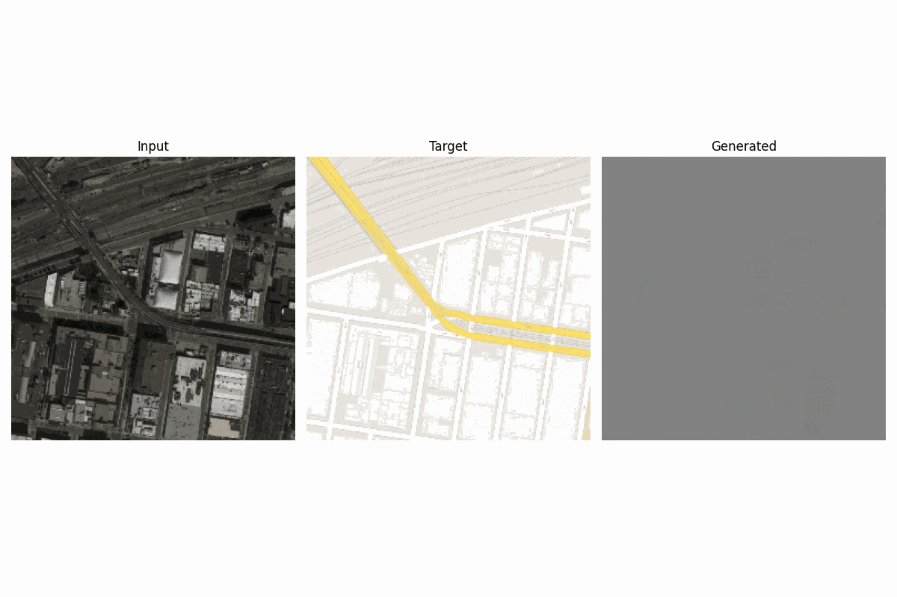
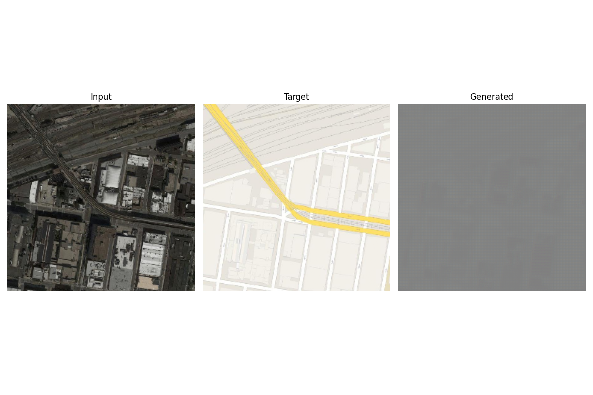
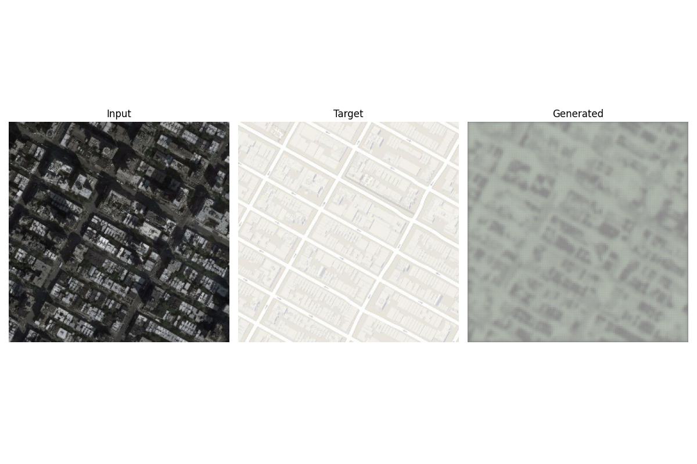
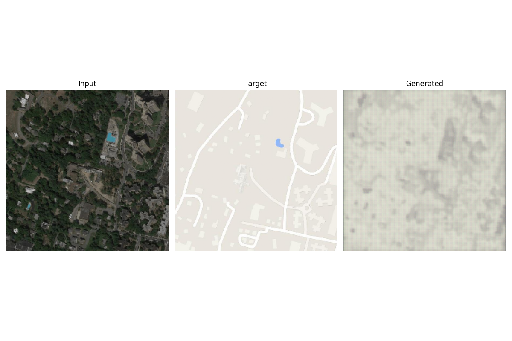

Service
checking
Monitor training progress, model health, and inference quality for your pix2pix pipeline in a standalone frontend mapped to your existing API flow.
Service
checking
GPU Nodes
0
Avg Latency
0ms
Recent SSIM
0.000




Upload a satellite image and convert it into a map-style output using your inference API.
Select an image to begin conversion.
Download ResultUploaded image preview appears here.
Converted output appears here after processing.
Restored project logic with refreshed dark design and color system.
MAE: lower is better
SSIM: closer to 1.0
PSNR: higher is better
1. Data Ingest
Paired [map | satellite] dataset
Split, normalize to [-1, 1], random jitter and crop.
2. Generator
U-Net architecture
Encoder-decoder with skip connections for structure retention.
3. Discriminator
PatchGAN critic
Patch-level realism optimization for map texture quality.
4. API Inference
FastAPI /predict endpoints
Health checks, model info and compare mode outputs.